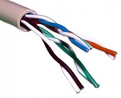

PASOS PARA CREAR UNA RED LAN
regresar
¿Para qué configurar una red de área local?
Cuando tiene varios equipos, puede ser conveniente conectarlos entre sí para crear una red de
área local (LAN). A diferencia de lo que la gente cree, el costo por configurar una red con estas
características es muy reducido.
Las siguientes son algunas de las ventajas que brinda una LAN:
Transferencia de archivos;
Recursos compartidos (conexión a Internet, impresoras, discos compartidos, etc.);
Movilidad (en el caso de una red inalámbrica);
Diálogo interactivo (principalmente cuando los equipos están conectados en forma
remota);
Juegos en red.
Dos tipos de red de área local
Existen dos clases principales de arquitectura de red local:
Las redes conectadas, basadas en la tecnología Ethernet, que representan a la mayoría de
las conexiones locales. Muchas veces se las denomina redes RJ45 ya que, por lo general,
las redes Ethernet usan cables RJ45;
Las redes inalámbricas, que generalmente usan la tecnología WiFi, correponden a este
tipo.
Hardware indispensable
Para crear una red de área local RJ45 en Windows, necesitará:
-Varios equipos con el sistema operativo Windows instalado (es posible tener dos equipos
con diferentes versiones de Windows en la misma red)
-Tarjetas Ethernet conectadas a un puerto ISA o PCI (con un conector RJ45) o integradas
a la placa madre. Asegúrese de que los diodos de la parte posterior de la tarjeta de red, si
corresponde, se enciendan cuando el equipo esté encendido y de que el cable esté
conectado. También existen adaptadores de red para puertos USB, especialmente en el
caso de los adaptadores de red inalámbrica.
-Los cables RJ45 en el caso de las redes conectadas.
-Un hub, dispositivo al que se pueden conectar los cables RJ45 desde diferentes equipos
de la red, que no son costosos (un valor aproximado de €50), un conmutador o, como
alternativa, un cable cruzado, si desea conectar sólo dos equipos.
Arquitectura de red
Para crear una red de área local RJ45, se recomienda que adopte una estructura conocida
como configuración "en estrella": los equipos se conectan al hub mediante el cable RJ45. Un
hub es un dispositivo que transfiere datos de un equipo a otro. Su elección se debe realizar en
función de la cantidad de equipos conectados de modo que haya suficientes enchufes
(denominados "puertos") en el hub.
En el caso de que se trate de una red extensa o una con requisitos de ancho de banda
considerables, un conmutador es una opción más conveniente, ya que permite distribuir
paquetes sólo a los equipos relevantes, mientras que un hub los envía en forma sistemática a
todos los equipos conectados.
Así es la estructura de este tipo de red:
Si desea conectar únicamente dos equipos, puede obviar el uso del hub conectando directamente ambos equipos con un cable cruzado RJ45.
Arquitecturas que no deberían usarse:
Aunque al principio parezcan adecuadas, las siguientes estructuras no brindan resultados favorables, a menos que los equipos tengan varias interfaces de red (varias tarjetas) y se hayan utilizado cables cruzados:
Requisitos mínimos para instalar y configurar una red LAN:
*Dos computadoras o mas, c/u con una placa de red.
*Los drivers de dichas placas instalados correctamente sin que tengan signos de admiración en la parte de administración de dispositivos de Windows.
*Elegir el servidor o (HOST) determinado para la conexión con las estaciones de trabajo.
*Elija el equipo HOST para Conexión compartida a Internet.
*Determinar el tipo de adoptadores de Red, que necesita para su Red domestica o de oficina.
*Determine el tipo de adaptadores de red que necesita para su red doméstica o de pequeña oficina.
*Haga una lista del hardware que necesita comprar. Aquí se incluyen módems, adaptadores de red, concentradores y cables.
*Debemos tener configurada la tarjeta de red.
Estaciones de Trabajo:
Dispositivo electrónico capaz de recibir un conjunto de instrucciones y ejecutarlas realizando cálculos sobre los datos numéricos, o bien compilando y correlacionando otros tipos de información. Estos permiten que los usuarios intercambien rápidamente información y en algunos casos, compartan una carga de trabajo.
Generalmente nos enfocamos en los ordenadores más costosos ya que posee la última tecnología, pero para el diseño de una Red de Área Local solamente necesitamos unas estaciones que cumpla con los requerimientos exigidos, tengamos cuidado de no equivocarnos ya que si damos fallo a un ordenador que no cumpla los requerimientos perderemos tiempo y dinero.
SWITCH o (HUB):
Es el dispositivo encargado de gestionar la distribución de la información del Servidor (HOST), a la Estaciones de Trabajo y/o viceversa. Las computadoras de Red envía la dirección del receptor y los datos al HUB, que conecta directamente los ordenadores emisor y receptor. Tengamos cuidado cuando elegimos un tipo de concentrador (HUB), esto lo decimos ya que se clasifican en 3 categorías. Solo se usaran concentradores dependiendo de las estaciones de trabajo que así lo requieran.
SWITCH PARA GRUPOS DE TRABAJO:
Un Switch para grupo de trabajo conecta un grupo de equipos dentro de su entorno inmediato.
SWITCHS INTERMEDIOS
Se encuentra típicamente en el closet de comunicaciones de cada planta. Los cuales conectan a los concentradores de grupo de trabajo. (Ellos pueden ser opcionales).
SWITCHS CORPORATIVOS
Representa el punto de conexión central para los sistemas finales conectados en los concentradores intermedio. (Concentradores de Tercera Generación).
MODEM
Equipo utilizado para la comunicación de computadoras a través de líneas analógicas de transmisión de datos. El módem convierte las señales digitales del emisor en otras analógicas susceptibles de ser enviadas por teléfono. Cuando la señal llega a su destino, otro módem se encarga de reconstruir la señal digital primitiva, de cuyo proceso se encarga la computadora receptora. NOTA: El Fax Modem solo lo usaremos para el Servidor (HOST). Comúnmente se suele utilizar un Modem de 56K.
TARJETAS ETHERNET(RED)
La tarjeta de Red es aquella que se encarga de interconecta las estaciones de trabajo con el concentrador y a su vez con el Servidor (HOST).
Materiales para instalar una red LAN:
Conectores RJ45:
Uno de los conectores principales utilizados con tarjetas de red Ethernet transmite información a través de cables par trenzado.
Cable (UTP) Categoría 5:
Tipo de cableado más solicitado. Es un estándar dentro de las comunicaciones de redes LAN.

Grimpadora:
Son una especie de alicates y sirven para fijar los cables.

Tester de Cable:
Sirve para medir magnitudes eléctricas en diferentes ámbitos.
Tarjeta de red
Permite la comunicación entre diferentes aparatos conectados entre si.
Hub o Switch:
Llevan a cabo la conectividad de una red local (LAN). La mayoría soportan cables cruzados.